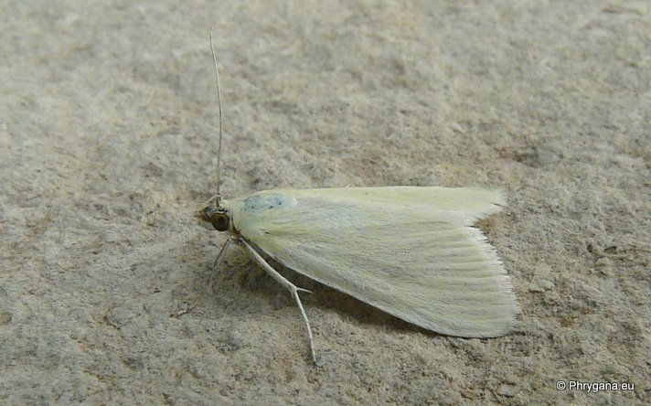

| PHRYGANA | Fauna | Flora | Galles | liste des espèces |
contact -
info - commentaires phrygana1 (at) gmail.com |
| Particularités crétoises | nouveautés | Mines | ressources naturelles |
| Sitochroa palealis (Denis & Schiffermuller 1775) |
| 356 | Fauna | CRAMBIDAE | Pyraustinae | Sitochroa Hubner 1825 |
|
Sitochroa palealis Melambes (Agios Giorgos) 21 mai 2012 |
| Möhrenzünsler |
| Envergure: 28 - 34 mm |
| Adulte: la couleur de fond est blanc soyeux légèrement crème |
| La chenille (de couleur verte à rose, avec le corps marqué de points noirs brillants) est oligophage: graines et fleurs de nombreuses Apiaceae dont surtout Daucus carota; crée un abri de soie dans les têtes florales d'où elle émerge pour se nourrir |
| Espèce bivoltine; nymphose dans un cocon de soie souterrain |
| Période de vol: avril mai juin septembre octobre |
| Statut en Crète: indigène |
| Biotopes en Crète: phrygana, olivaies, terrains vagues, bords de chemins |
| Distribution: Europe surtout méditerranéenne, Oural, Ukraine, Asie mineure, Amérique du Nord (introduit), Afrique du Nord |
| Note: vient à la lumière; vole dès le crépuscule. |
|
Sitochroa palealis Melambes (Agios Giorgos) 21 mai 2012 |
|
 Sitochroa palealis Melambes (Agios Giorgos) 02 juin 2013 |
| 10 juin 2013 |
| © paul fontaine -- © Phrygana.eu 2007 -- 2013 |